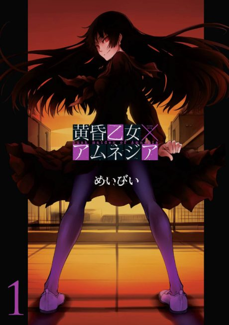

Anime
Anime
Manga2012 · Horror, Mystery, Romance
Dusk Maiden of Amnesia
黄昏乙女×アムネジア
AniList7.5
Animeter—
Episodes12 ep
MangaUnclear
Anime finished. Where does the manga pick up?
StatusNo source yet
We looked for where the anime ends in the manga but found no source we trust yet. The manga is 54 chapters, finished.